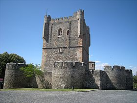

Bragança é uma cidade portuguesa, capital do Distrito de Bragança, na região de Trás-os-Montes, no Nordeste de Portugal (Nordeste Transmontano), com 21 853 habitantes no perímetro urbano. É o oitavo maior município português, com 1 173,57 km² de área, 35 341 habitantes (2011) e 39 freguesias.
O município é limitado a norte e leste por Espanha (província de Zamora), a sueste pelo município de Vimioso, a sudoeste por Macedo de Cavaleiros e a oeste por Vinhais. Em relação às outras capitais de distrito, Bragança é a que se situa mais a norte. Os celtas baptizaram a cidade, fundada no século II a.C., com o nome de Brigância, que se foi latinizando até passar a ser "Bragança". Este nome é a origem do gentílico mais comum: brigantino. Bragançano também é muito usado. Bragantino e bragançês são pouco usados.
